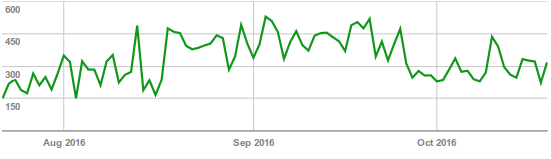
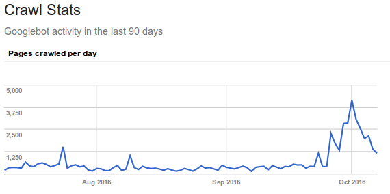
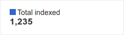
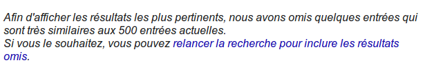

Makina Corpus est spécialisée dans les logiciels libres
(avec une expertise très technique)
Je suis un expert Drupal...
qui s'intéresse notamment au côté technique du SEO.
Technique / Contenu / Popularité
Il y a 15 ans, il fallait essayer de se référencer.
Aujourd'hui, il faut essayer de se différencier.
Trop de pages sont indexées
Les pré-productions sont indexées
Les pages de test sont indexées
...
L'objectif est de canaliser le parcours des robots sur le site
Permet d'interdire des pages aux robots
NE contrôle PAS l'indexation
Indique aux moteurs les pages que l'on souhaite crawler.
Éventuellement inutile selon la taille de votre site.
Il faut à tout prix éviter une sitemap incorrecte.
Le robot passe sur la page d'accueil...
... Met tous les liens dans la liste...
... Et parcourt ces liens
(et recommence avec ces nouvelles pages)
À l'aide de logiciels :
DEMO
DEMO
Un spider trap sur la page d'accueil !
Attention aux paginations infinies, filtres à facets, ...
Combien de pages Google peut crawler par jour SUR VOTRE SITE ?
Quelles sont les pages qui valent la peine d'être crawlées ?
Viser 400ms (et même moins)
Aidez Google à parcourir plus de pages de votre site
Search Console
Pages = files (CSS, JS, PDF, ...)
GoogleBot = GoogleNews, Google Mobile, ...
Screaming Frog
Botify (Saas)
Loggly (Saas)
404 crawlées souvent, urls d'un ancien site non redirigées, ...
3 couches de crawl :
Les pages bougent entre les couches (au gré de vos changements)
Identifier dans quelle couche sont les URLs de votre site
Nettoyer ce qui traîne
À partir d'une ou même plusieurs centaines de pages
I have never seen and never worked with a large site where improving crawl bandwidth didn’t mean significant increases in organic search traffic (dans un article de Rand Fishkin)
Tout ce qui est crawlé est indexé.
Déjà... tout N'est PAS crawlé...
Quid de l'indexation ?
Menu Google Index / Index Status
Avec la commande site:domain
Google sépare les pages en 2 indexs
Le seul moyen de contrôler la NON indexation
<META name="robots" value="NOINDEX">
Visez la qualité, pour les moteurs mais surtout pour vos utilisateurs
Quelques ressources pour aller plus loin
(les articles qui ont inspiré cette conférence) :